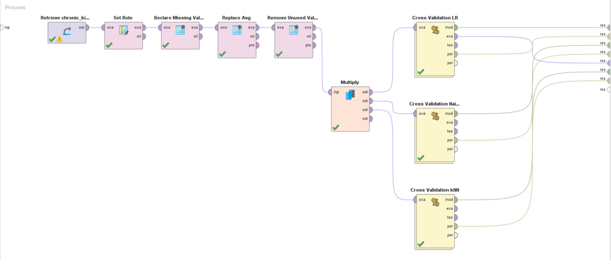

Dataset analysis of CDK dataset.
Approximately 10% of the world's population has some degree of kidney disease; Unfortunately, it goes unnoticed because its symptoms appear very late. Its main risk factors for developing it, such as high blood pressure, diabetes, obesity, family history of kidney disease and age over 60 years, are very prevalent globally.
Due to their high cost, kidney failure replacement therapies, such as dialysis and kidney transplantation, are inaccessible to the majority of the population, especially in developing countries. Hence the importance of detecting kidney disease in a timely manner and establishing therapeutic measures to slow its progression.
Kidney disease can be prevented if it is detected early. A blood creatinine test as well as a urine protein test are sufficient to detect its presence. The application of measures such as good control of blood pressure, blood glucose, maintaining an ideal weight, as well as the use of medications that protect kidney function, can slow the deterioration of kidney function and thus prevent or delay the need for dialysis and transplant.
To achieve the above, it is necessary to raise awareness and educate the general population, including health professionals, about the necessary measures to promptly detect and treat kidney disease.
The objective of this dataset is to predict whether or not a person has a Critical Kidney Disease (CDK).
Something to take into account in this dataset is the large number of missing attributes. For this, a “Declare missing Value” operator is used to mark the “?” as missing values and games replace them with the average using the “Replace Missing Values” operator. In fact, it would be better to use another more appropriate way to replace missing values, for example one in which the distribution of the data is not affected.
Due to the lack of knowledge on the subject and the non-possibility of creating a correlation matrix, it is not possible to state whether one attribute has more relevance than another on the target variable. It would be appropriate to have experts on the subject to endorse the decisions.
Moving on to the outliers, there is not much information about how these affect the target variable, for example, a sample with a too high value of “white blood cell count” could be taken as an outlier. However, a priori we will not eliminate said outlier since this case could be significant for the presence of CKD. So, as a first instance of modeling, no outlier treatment will be done; in case the performance is not adequate, some type of treatment will be considered.
The only cases in which a normal distribution is needed are those of numerical values when modeling with the Naive-Bayes algorithm. There are some cases of attributes with slightly “strange” distributions, for example serum creatinine, in which the vast majority of samples are limited to a certain range except for a couple that could be considered anomalies. Despite this, no normalizations will be carried out so as not to affect the impact of these values on the predictions.
Since we are dealing with a classification problem in which the target variable is binomial (cdk or not cdk), we will try to run the model with three algorithms.
The first task to perform within Rapid Miner will be to import the dataset and mark our target variable using the Set Role operator. After that, the Declare Missing Value operator is applied to declare some fields as missing values. Following that, the Replace Missing Values operator is applied to replace the missing values with the average of each attribute. After that, a Remove Unused Values operator is used to remove the possibility of some attributes to have a "?" value.
Once the dataset has been correctly prepared, the different classification algorithms will begin to be applied to evaluate which one gives the best results. For this, the Multiply operator is used to multiply the dataset by 3 and thus be able to apply Logistic Regression, Naive Bayes and KNN. To apply each of them, the Cross Validation operator is used to divide our dataset into a training part and a testing part.
The Rapid Miner process should look something like this:
Within each Cross Validation there is the algorithm to use and the Performance operator, to evaluate the performance of each of them. Below you can see the configuration of each Cross Validation and the result of each algorithm.
As can be seen, all the algorithms obtained a fairly high result (close to 100%), so in a context where the operation of the model must be as perfect as possible since we are trying to determine if a person Whether or not you have kidney disease, this percentage can be accepted.